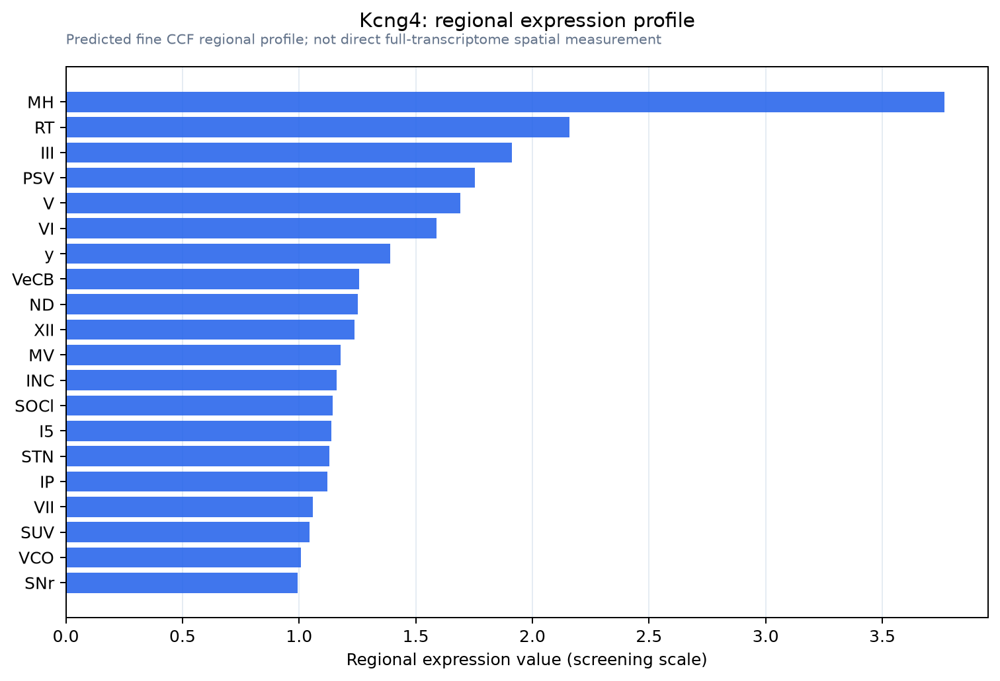

Kcng4
Voltage-gated potassium channel regulatory subunit KCNG4 (Potassium voltage-gated channel subfamily G member 4) (Voltage-gated potassium channel subunit Kv6.3) (Voltage-gated potassium channel subunit
Spatial tier: RESTRICTED · Class: ION_CHANNEL · Top region: MH (Medial habenula) · Positive regions: 20/554
46.4Discovery Score
41.6Targetability Score
CEvidence grade C
What this means: Kcng4: fine CCF profile is restricted toward MH (top regions: MH, RT, III, PSV, V; 20 positive regions); direct spatial validation is still required.
Direct spatial evidence
MERFISH REGION LOCATOR

Regional expression figure

Predicted WMB × fine-CCF profile; not direct full-transcriptome spatial measurement.
Spatial profile
Evidence and specificity
- Evidence status
- PREDICTED_FINE
- Direct sources
- None; predicted localization only
- Exclusive threshold
- 12 positive regions out of 554
- Spatial specificity
- 0.310
- Top-region fraction
- 0.071
- Filter status
- PASS
Interpretation limits
- Cell-type-to-region projection is imputed expression, not direct spatial measurement.
- Adult reference atlases do not establish stability across age, sex, strain, state, or disease.
- Transcript abundance does not guarantee protein abundance or genetic-tool performance.